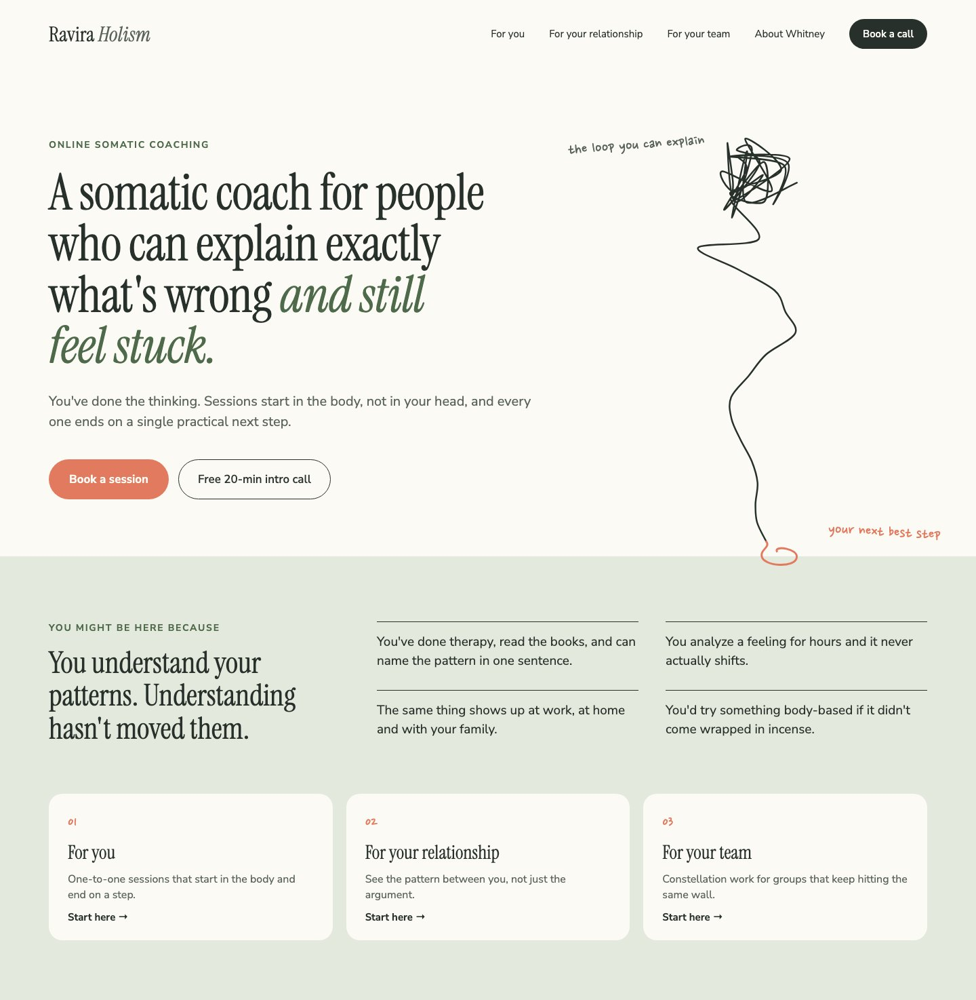
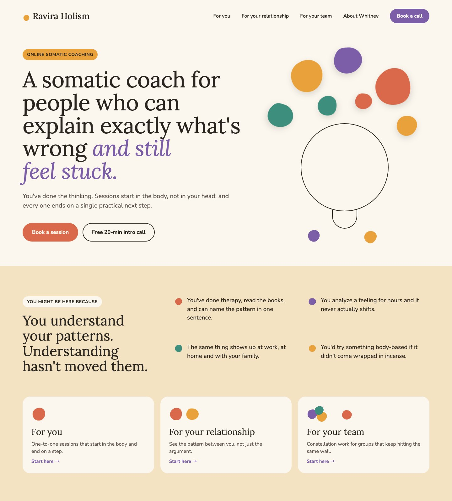
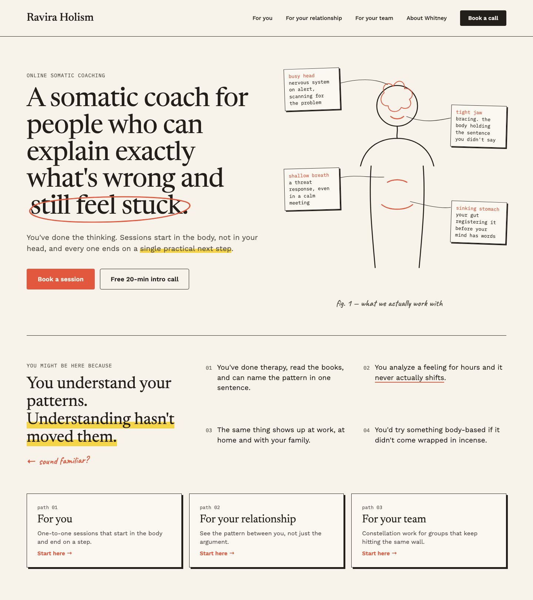
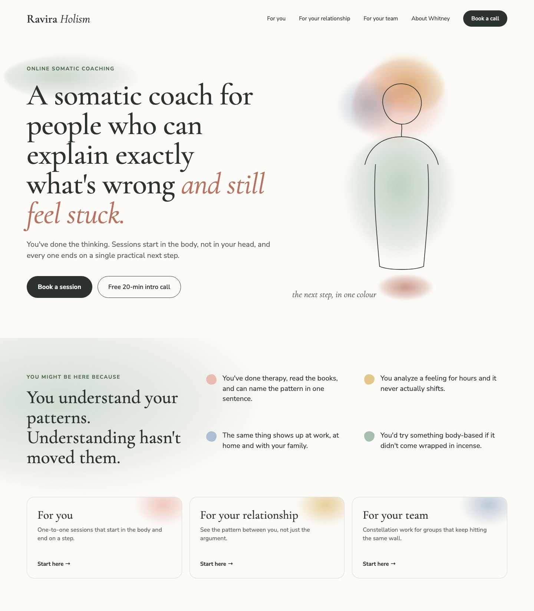
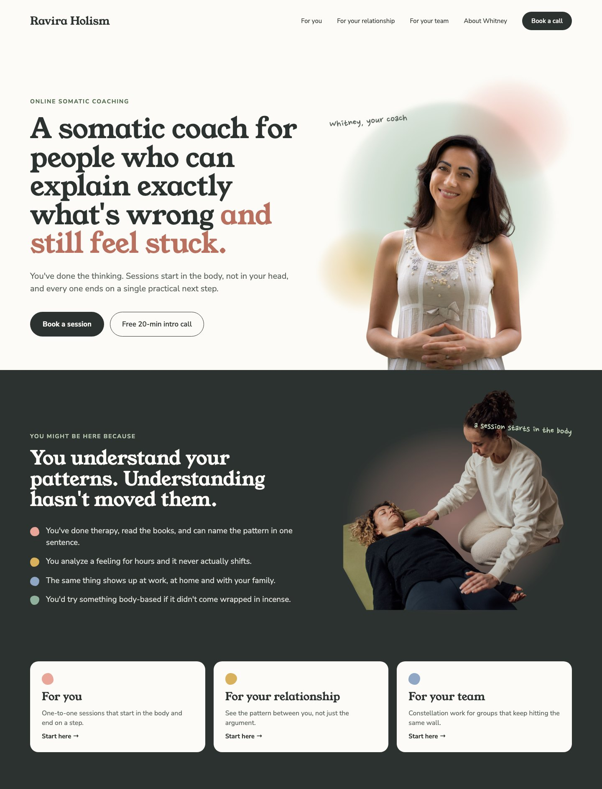
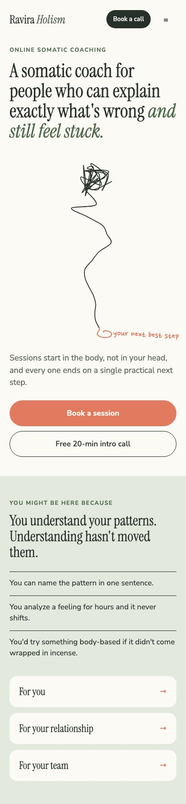
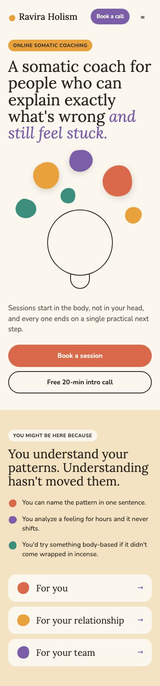
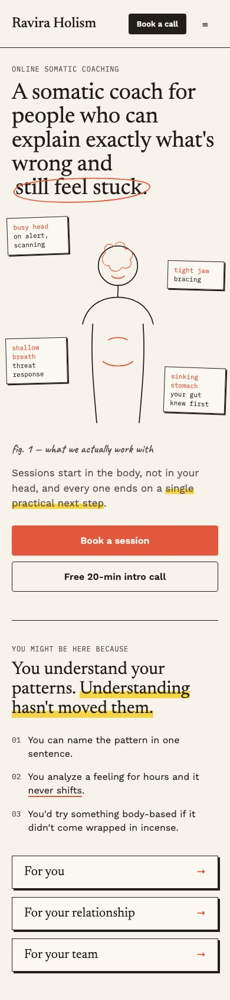
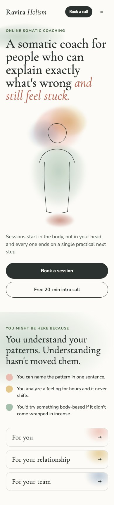
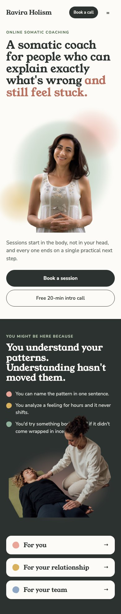

Here are five looks for your homepage. Each one shows the top of the page and the first scroll, on desktop and on a phone.

1. Sage and LineCalm and airy
2. Felt and ColorWarm and playful
3. Field NotesSmart and grounded
4. WatercolorSoft and gentle
5. Cut-outsPersonal and warmCalm and airy
One continuous line starts as a tangle around the head and loosens down the body into a single footstep, which is your next best step. It's mostly white and sage with a warm coral accent. The line would draw itself in when the page loads.
Inspired by: The animated line art site you sent

Warm and playful
The colored shapes come from the felt pieces you use in constellation sessions. They're jumbled around the head and a couple settle lower down. Marigold, purple, terracotta and teal sit on a cream background, and the same shapes turn into the icons further down the page.
Inspired by: The color and quirky elements of the health coaching site you sent

Smart and grounded
A sketched figure with little typewriter notes shows what the body is doing: a busy head, a tight jaw, shallow breath and a sinking stomach. Paper texture, hand-drawn circles and a highlighter make it feel like a curious scientist's notebook. Of the five, it puts the science front and center the most.
Inspired by: The hand-drawn circles and underlines on the career coaching site you sent

Soft and gentle
Watercolor washes gather around the head and settle down through the body, with a fine line drawing on top. It's the quietest and most spacious of the five.
Inspired by: The calm, pale feel of the line art site

Personal and warm
Your own photos sit on soft watercolor washes, so you're the first thing people see. A darker section below adds contrast and shows what a session looks like.
Inspired by: The two photos you sent us

Please let us know which direction you like best. If you like pieces of a few, like the colors from one and the illustration from another, tell us that too and we'll combine them.